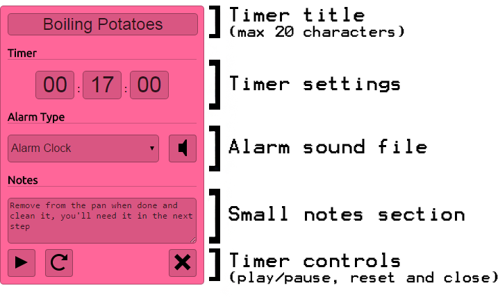
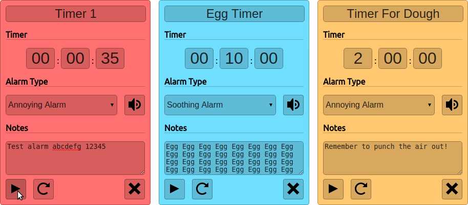
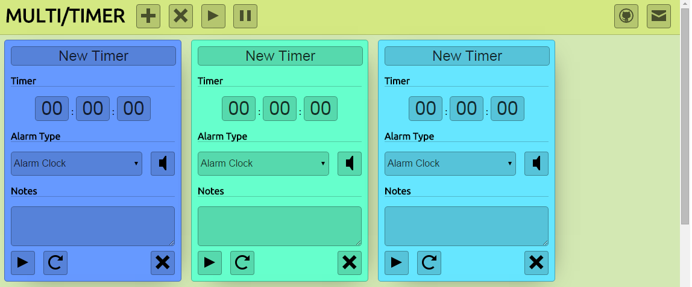

Multi/Timer
While at the Chaos Communication Camp 2015 (which was great), I had an idea for a small software project. I often use online timers when cooking (since my physical timer is broken) and these online timers are... well, not so good. They're nearly all old, ugly, reliant on flash (!!!) or a combination of all 3. They also only usually have 1 timer per page, when I often would need to time multiple things (such as dough rising, stew simmering, etc).
So, wanting a little bit of HTML/CSS/JS practice, I decided to make my own solution. I wanted it to revolve around 3 key points:
- Emphasis on multiple timers
- Colourful and simple, in opposition to the other sites that look like someone tumbled the early 00s web into a garbage compactor.
- Ability to work on multiple screen sizes
Multiple Timers
One of the issues that comes about when tracking multiple things at once is that I can often forget which timer is tracking which process, especially if they're tracking processes that take similar amounts of time (it's easier to distinguish between a timer for 5 minutes and a timer for 2 hours, for example). I thought that the timers could benefit from the user being able to set a title for it, as well as having a small notes section. With these criteria in mind, I designed the representation of the timer to be a 'card':  These cards can then be easily stacked next to each other. The result is a clean looking interface in which each timer is easily identifiable:  In the code, the multiple timers functionality is achieved by fudging a kind of object-orientated approach (TypeScript helped me here). When a timer is created, it gives it an ID which is just the string 'timer-' with a number appended on the end, which is incremented whenever a timer is created. This is then placed in an associative array, where the key is the ID and the object is refers to is the timer.Colourful Interface
One way I thought would be useful in distinguishing between different timers would to have them be random colours upon creation. However, I wanted to keep a vaguely-pastel similarity between any colour generated, and found that the easiest way of doing this would be to use HSL colours. HSL colours are defined by 3 values:- Hue - A value between 0 and 359, corresponding to a position on the colour wheel.
- Saturation - A value between 0 and 1, corresponding to the percentage of saturation (0% saturation being greyscale).
- Lightness - A value between 0 and 1, corresponding to the brightness of the colour (100% lightness is white, 0% is black).
$.Color().hsla(Math.floor(Math.random() * 360),1,0.7,1);$.Color().hsla(Math.floor(Math.random() * 36)*10,1,0.7,1);Multiple Screen Sizes
Due to the way it was designed, getting the timers to work on multiple screen widths was fairly easy. Originally the timers were just floated left in the CSS, and then the browser would automatically fit as many as it could on 1 line as possible, given the screen width. However, this led to a problem when there was only enough screen width available for, say, 3.75 timer cards:  As you can see, this leaves a big chunk of empty space at the side of the window. An easy solution would just be to centre everything, but I liked the visual idea of adding cards from left-to-right. I solved this by writing a small javascript function that runs whenever the window is resized:function resizeTimerspace() {
var size = $(".timer").outerWidth(true);
if (size != null) {
var screenSize = $(window).width();
$('#timerspace').css("margin-left", Math.floor((screenSize - (size * (Math.floor(screenSize/size))))/2) +"px");
}
}
$( window ).resize(function() {
resizeTimerspace();
});